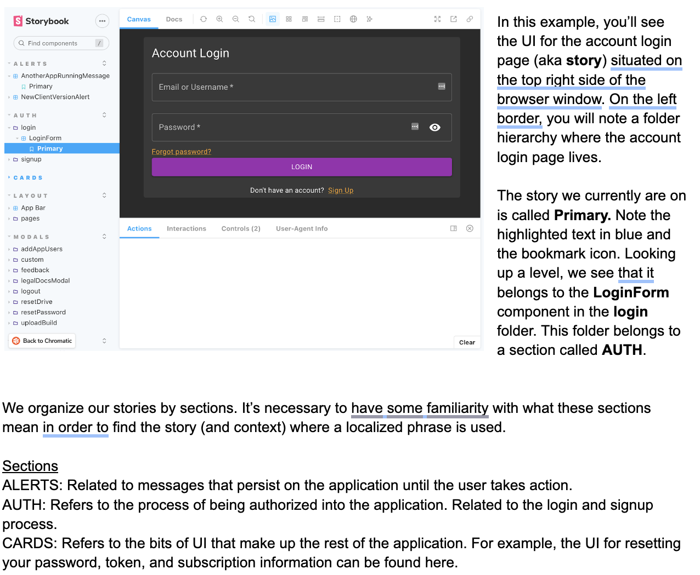

Too much manual maintenance
Developers were maintaining duplicate entries and making individual decisions about how translation files were organized.
Pluto VR · Localization and Internationalization
Pluto VR needed a more maintainable way to localize its React product. Developers were manually maintaining translation files, while translators did not always have enough context to understand where a phrase appeared in the interface. I compared translation-management systems and linguist services, then chose Lokalise because it fit our product and the way the team worked. I helped put the workflow into production and used Korean as our first real test before we expanded to other languages.

01
Our existing process put a lot of manual work on developers. Phrases had to be maintained across translation files, and the JSON structure depended on individual decisions about where each phrase belonged. That made the process harder to keep consistent as the interface changed.
Translators had a different problem. A phrase that makes sense on its own can mean something different once it appears on a button, dialog, or screen. They needed a way to see more of that context, while engineers needed clearer guidance for preparing and handing off translatable text.
The problem was bigger than finding a translation tool. We needed a process that connected the code, the translation files, the linguist, the interface, and the people responsible for keeping it all working.
Developers were maintaining duplicate entries and making individual decisions about how translation files were organized.
Translators could see the text without always seeing where or how it appeared in the product.
Engineers needed a workflow they could follow without already knowing the details of localization.
02
I compared translation-management systems and external linguist services. Cost mattered, but the options were fairly comparable, and I no longer have the exact pricing. What mattered more was whether the tool worked with our React setup and made sense for how engineers and translators needed to work together.
Lokalise fit the project and team best. We also already had an in-house Korean linguist through a Korean government-supported program, so Korean gave us a practical first language for testing the workflow. Instead of working only with sample strings, we could see how the process held up with a real linguist and real product content.
Would it work with the product architecture we already had?
Could it reduce duplicate manual work and keep source phrases more consistent?
Could engineers repeat the process without needing to become localization specialists?
Could the linguist understand where text appeared and what it was doing in the interface?
Did the workflow leave room for a person to make language decisions instead of relying on machine translation alone?
Would this actually work with how our team worked, and would it still be manageable after the initial setup?

03
Before
Production workflow

04
Decision 1
The options were fairly comparable in cost. Lokalise won out because it fit our React project and the way engineers and translation work needed to connect.
Decision 2
Because we already had an in-house Korean linguist, Korean was a practical first language for testing the production workflow with real product content before adding more languages.
Decision 3
FormatJS and Lokalise could move strings through the process, but they could not tell us whether a translation made sense on the actual screen. Storybook and human review filled that gap.
Decision 4
Working code was not enough. Engineers and the linguist needed clear instructions for creating tasks, finding interface context, and handing work off to each other.
05
My part of the project crossed several areas. I researched the options, selected Lokalise, worked with FormatJS and Storybook, tested the production workflow with our Korean linguist, mapped the handoffs between engineering and translation, and wrote the documentation the team needed to keep using the process.
06


07
I do not have reliable measurements for time saved or onboarding speed, so I would rather describe what changed concretely. The team had a working production process, the linguist had more interface context, and engineers had clearer instructions for moving localization work through the system.
08
I came away from this project thinking less about localization as a translation step and more as a workflow. The code, the TMS, the linguist, the interface, and the documentation all affected whether it actually worked.
The options were fairly comparable in cost. What mattered more was whether the tool fit our React setup and the way engineers and translation work needed to connect.
Using Korean first let us see how the whole production workflow behaved with real content and a real linguist before adding more languages and more coordination.
The process was not really finished if only I understood how it worked. The documentation was part of making the workflow usable by the rest of the team.
What I took from the project
What I liked about this project was that no single part of it was enough on its own. The code had to work, the linguist needed context, engineers needed a process they could follow, and the documentation had to make sense after the initial setup was done.
That is the kind of work I tend to be drawn to: figuring out how the people, tools, and processes around a product fit together, then making the system easier to use and maintain.
Return to selected projects